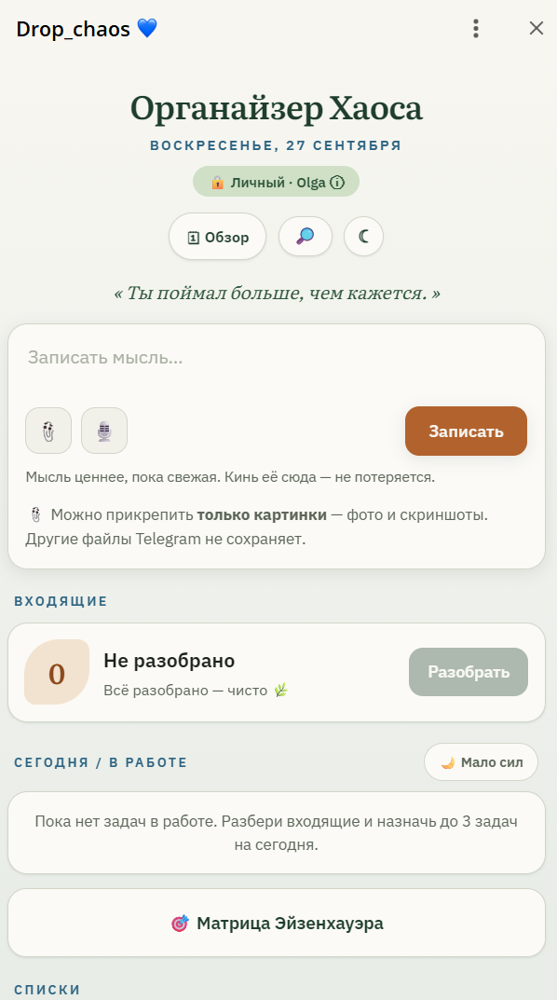
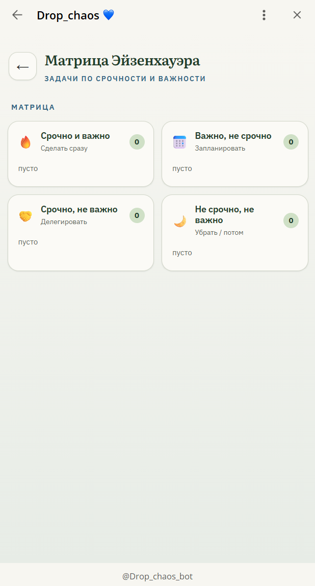
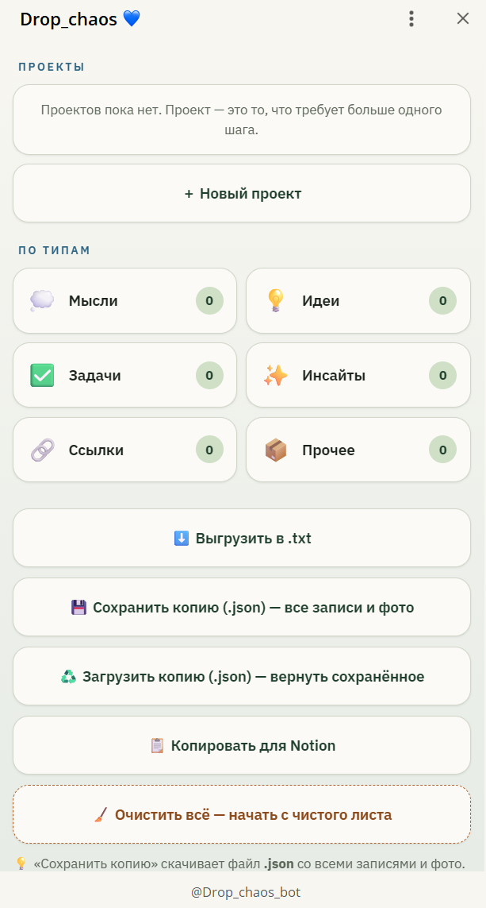
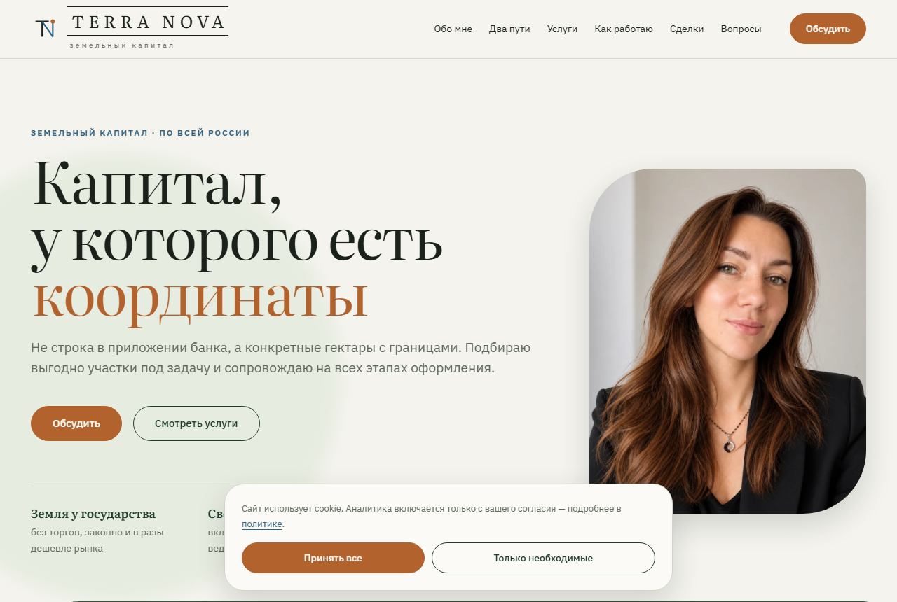
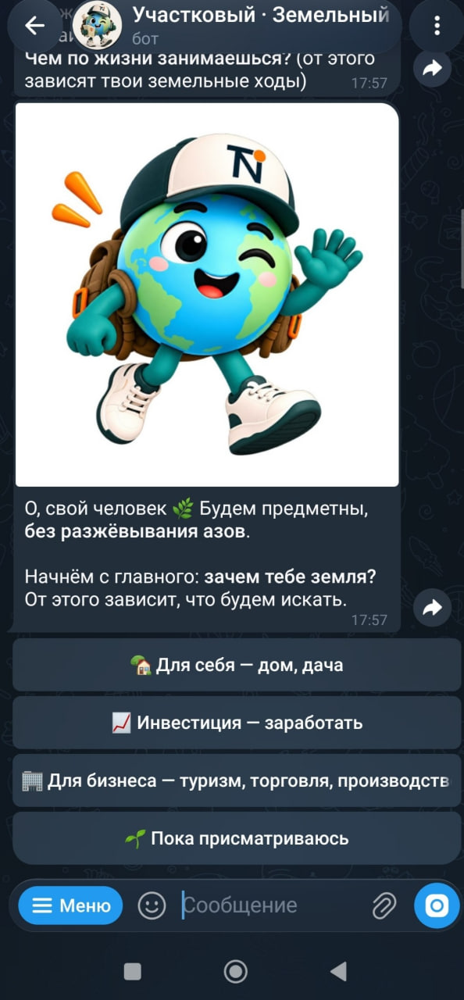
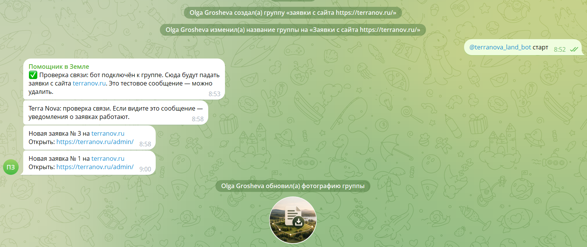
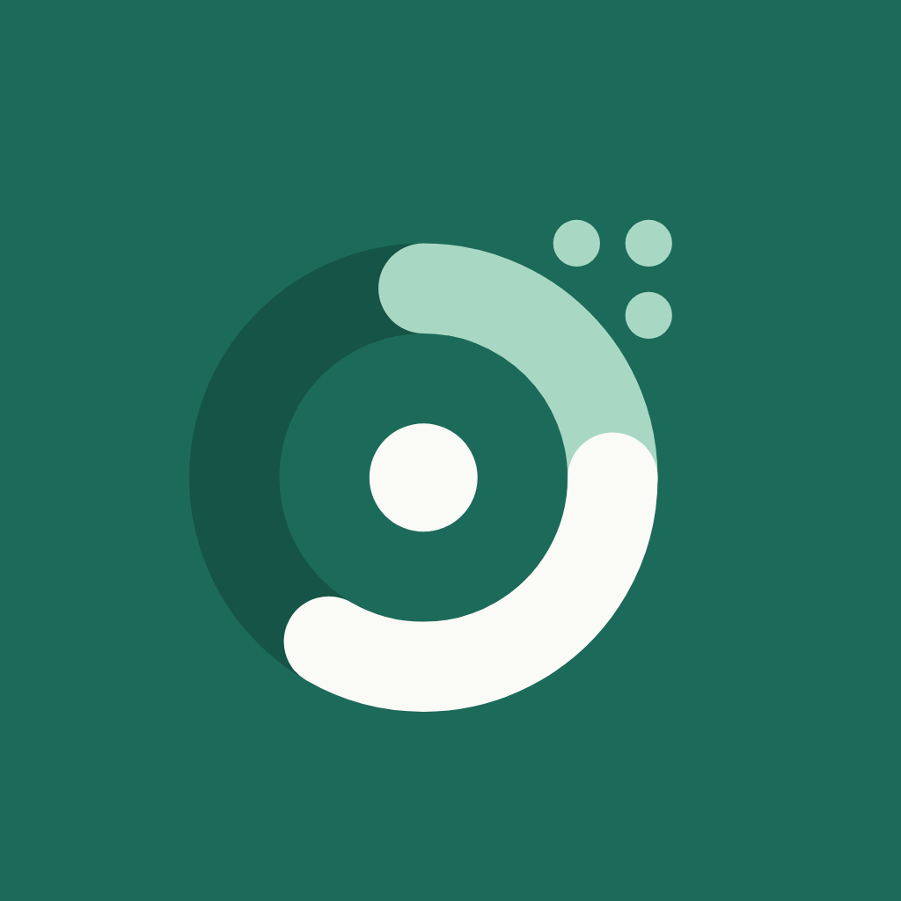

Автоматизация на ИИ под ключ
Аудит процессов → ИИ-агенты, боты и воронки, интеграции, работа с БД, развёртывание и поддержка.
Автоматизация бизнеса
Я бизнес-аналитик и архитектор: считаю выгоду и проектирую решение. Код пишет ИИ. Дни вместо кварталов — без «быстро сделали не то».
Кто за этим стоит
Строила объекты — теперь строю цифровые системы. Стройку ведёт ИИ, проект — мой.
Быстро — потому что ИИ.
Правильно — потому что я аналитик
Спектр работ
Не программирую — проектирую. Архитектор решений, а не строчек кода. И этого достаточно.
Аудит процессов → ИИ-агенты, боты и воронки, интеграции, работа с БД, развёртывание и поддержка.
Мини-приложения в Telegram, сайты, CRM-платформы.
ИИ-изображения, дизайн-системы, контент-завод, скиллы для ИИ.
Консультация по возможностям автоматизации и аудит процессов — вход без обязательств.
Проекты
Всё, что показано ниже, я собрала сама — на ИИ, под реальные задачи.
Не один бот — семья агентов с единым центром управления.
Задачи, данные и рутина разбросаны. Нужен не бот, а система, которая ведёт всё сама.
Построила и администрирую команду агентов: координатор Copeech, Terra (земля и финансы), Navi (развитие сына), Romi (разработка) плюс хостинг мини-аппа. У каждого — свой бот, память, инструменты и автоматизации по расписанию; всё сведено в командный центр. Понимают голосовые, отвечают голосом.
Команды выполняются только от владельца, устойчивость к чужим сообщениям и инъекциям (готовила к конкурсу ИИ-агентов ЛАБС).
Собственная система, работает каждый день.
4 бота-компаньона + хостинг мини-аппа — под одной хозяйкой, у каждого свой характер и аватар:
Личный ассистент: Notion-хаб, календарь, разбор голосовых, аффирмации, итог дня. Администрирует остальных.
Бизнес-календарь и бюджет, торги, оценка участков, стратегия и дайджесты, контент «Terra Nova».
Утренние карточки, помощь со школой и лагерем, распознавание почерка по фото, идеи для развития.
Лендинг Terra Nova и код, git и деплой, бережёт токены, проверяет результат сама перед «готово».
Держит Telegram Mini App «Организатор Хаоса» — приём, хранение и выдача мини-аппа.
Поймать мысль сейчас — разобрать потом. Разгрузка головы прямо в Telegram.
Мысли, идеи и задачи роятся в голове и теряются в заметках и чатах «с собой», а списки дел превращаются в свалку.
Захват мысли текстом или голосом в единые «Входящие». Отдельным ритуалом — разбор: приложение само предлагает тип, вытаскивает срок из текста и приоритет по матрице Эйзенхауэра. В работе не больше трёх задач, в тяжёлый день — бережный режим «мало сил». Плюс поиск, проекты, обзор недели, виральный «Итог недели», тёмная тема, экспорт.
Работает прямо в Telegram, ставить ничего не нужно. Умный разбор — на устройстве, данные хранятся только у пользователя, на сервер ничего не уходит.
Живой продукт, участвует в конкурсе мини-аппов.
Открыть мини-апп →


Сайт + ИИ-ассистент + аналитика рынка.
Разрозненные данные по земле, ручная подготовка материалов и сделок.
Живой бренд-лендинг — можно открыть прямо сейчас.
Открыть сайт →
Страх земли → азарт. За 5 минут — от «сложно и страшно» до заявки.
Люди боятся земли: «сложно, дорого, обманут» — и не доходят до эксперта.
Игровая воронка-детектив с маскотом: человек идёт по 4 «уликам» (категория, ВРИ, риски, коммуникации), бот подбирает стратегию под цель и бюджет, а в финале выдаёт «героя», персональный разбор, чек-лист (PDF) и подписку на канал. Ответы сохраняются как готовый лид-профиль.
/leads — заявки, /drops — кто не дошёл, /stats — воронка по шагам, /insights — портрет аудитории, /broadcast — рассылка. Согласия по 152-ФЗ.
Живой бот: растит подписку канала, собирает базу и данные для кастдева.
Открыть бота →
Карточки, сводки и напоминания приходят сами.
Рутинные отчёты, карточки и напоминания делались вручную.
Рутина идёт сама, по расписанию, без ручного участия.
Заявка с сайта — сразу в работу, ничего не теряется.
Заявки с сайта теряются, нет единого места и порядка по закону.
Заявка с сайта мгновенно приходит уведомлением в мессенджер, а рядом — мини-CRM/админка: статусы, фильтр спама, выгрузка и удаление персональных данных по запросу.
Проверяю нормативку и строю приём данных по 152-ФЗ: российский хостинг и база, согласия и политика, данные не уходят за рубеж.
Заявки в одном месте, по закону, без ручного разбора.

Один визуальный язык — для сайта, ботов и контента. И готовые сайты без дизайнера и верстальщика в штате.
Визуал живёт вразнобой, а сайт обычно собирают вдвоём — дизайнер и верстальщик, и каждый тянет свой срок.
Собрала единый визуальный язык Terra Nova — палитра, шрифты, геометрия, форматы — и на нём делаю сайты целиком: от структуры и текстов до запуска. Этот сайт — мой от первой мысли до последней кнопки: идея, содержание и каждое решение мои, код пишет ИИ. А рядом работает контент-конвейер, который выдаёт карточки и PDF в том же стиле.
Один узнаваемый стиль везде — от бота до сайта. Этот лендинг собран на нём же.
Интеграции по проектам
Как работаю
Дешёвый кодер сделает быстро НЕ ТО. Я как аналитик сделаю быстро ТО.
Считаю, что вообще стоит автоматизировать и что это даст в деньгах и часах.
Готовлю ТЗ и архитектуру как бизнес-аналитик — до строчки кода.
Собираю рабочую версию — дни, а не кварталы.
Инструкции, обучение команды, сопровождение.

Обо мне
Бизнес-аналитик и архитектор. 10+ лет в крупных промышленных корпорациях (нефтегаз, металлургия), из них 5 лет — в бизнес-анализе и архитектуре: собирала требования, проектировала сквозные процессы на десятки подразделений и ИТ-систем, считала экономический эффект.
Инженер-строитель по образованию — поэтому понимаю не только технику, но и предметный контекст бизнеса. Теперь собираю то же самое, но быстро и на ИИ: агентов, ботов, воронки, мини-аппы и сайты. Главный в проекте — бизнес-аналитик и архитектор: решения и результат за мной, а сборку берёт на себя ИИ.
Вопросы
На серверах в России, по 152-ФЗ. Данные не уходят за рубеж; для проектов с персональными данными — только российский хостинг и база, с согласиями и политикой.
Нет. Техническую часть беру на себя — вы получаете готовый рабочий инструмент и простую инструкцию. Общаемся на человеческом языке, без жаргона.
Начнём с разбора: за 30 минут посмотрю ваш процесс и честно скажу, где автоматизация реально даст эффект, а где не стоит. Если не нужна — так и скажу, без навязывания.
Разбор — документ на следующий день. ИИ-ассистент и сайт — от нескольких дней. Платформа — 3–4 недели до первой рабочей версии. Точные сроки — после разбора процесса.
Если увижу, что автоматизация вам не нужна, — так и скажу.
Канал «Продуктовый хакер» — мой канал про бизнес-анализ, продукт и ИИ.